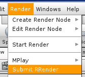

Houdini rendering requires a batch license per client.
Please enter your number of Houdini licenses in rrConfig.
If you use Mantra rendering, then it does require a Mantra render license.
You can set the environment to your license server in the Setenv Files.
Please execute the rrWorkstationInstaller to install the submission plugin.
In Houdini, you have to run the script as shown in the screenshot.
It will start the rrSubmitter with your scene as commandline parameter.
Note: You can also start the rrSubmitter manually and load (multiple) scene files

rrSubmitter loads Mantra nodes only:
The submitter reads mantra nodes from out/ and obj/ only.
They can be set to direct render or to generate Mantra .ifd files.
If they generate Mantra .ifd files, then the rrSubmitter will setup two jobs.
One to generate the .ifd sequence and one to render the .ifd sequence (With wait for first job).
Mantra .ifd sequence:
If you want to render a sequence with Mantra, it is sometimes easier to export an .ifd sequence and render that one, see Mantra.
(And rendering does not waste a full Houdini license)
Simulations:
You only want to simulate? If you want to simulate, then most RR customers create a small and fast preview mantra node after the sim.
To check if everything is right. You do not want to end up with a broken sim after 2 days of simulation.
Houdini 13 is able to stop and continue cached simulations.
Choose the renderer "simRender" at the rrSubmitter. (It sets Max Clients to 1, disables Preview Render and renders from start to end)
If you have a simulation that cannot be split, set the Sequence Divide min to 0.
More informations about non-frame jobs in help section "Knowledgebase".
Royal Render changes the environment that you do not have to install HtoA on all machines.
Installation Steps: